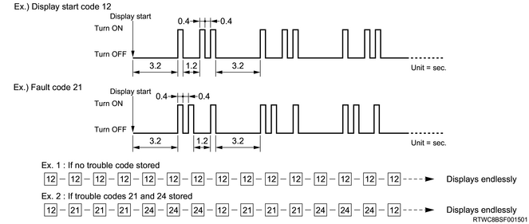

DTC
Perform Diagnostic system check-SRS controls first. The Diagnostic system check-SRS controls is performed to verify that the operation of the SRS airbag warning light is proper, and to observe the DTC information with a scan tool.
Note
Active code
Functional failure that is currently detected
Active codes are recorded in the RAM.
History code
Functional failure that was detected after the history memory was last cleared.
History codes are recorded in the EEPROM.
System diagnosis method
The system diagnosis method is a standardized method to repair all electronic control systems. The diagnostic procedure is always used to solve problems with the electronic control systems, and is the starting point in the event of a repair is required. The following steps indicate how to proceed through the diagnosis.
Confirm the customer complaint.
In order to confirm the customer complaint, the person performing the diagnosis for the vehicle must know how the system normally operates.
Perform a preliminary inspection.
Perform overall visual inspection, and review the maintenance history, and detect problems such as abnormal sounds and odors, collect DTC information.
Check for a related Service Bulletin.
When a DTC has been recorded
Accurately perform the repair according to the specified DTC chart.
If no DTC is stored
Select the symptom from the Symptom. Complete the repair according to the diagnostic procedure. It is also possible to perform the inspection by referring to the Functional Inspection.
When a relevant symptom is not found
Examine the complaint in detail.
Create a diagnosis plan.
Utilize the wiring diagram and operation principles.
If you can obtain repair history for similar cases, request technical assistance. Combine technical knowledge and effective utilization of available service information.
Caution
Diagnosis procedure
The diagnosis procedure used in this section aims to detect SRS problems and repair them. The procedure for quickly detecting SRS problems and effectively repairing is as follows. Not following this procedure with thorough caution may result in a longer diagnostic time, incorrect diagnosis, or replacement of incorrect parts.
Perform a preliminary inspection.
The following inspections must be always performed as the start of a diagnosis.
Overall visual inspection Inspection for poor connections in terminals and wires and for evidence of contact with water on the SRS control unitReviewing the maintenance historyDetection of abnormal noises or abnormal odor
Perform Diagnostic system check-SRS controls.
The Diagnostic system check-SRS controls inspection is performed to check whether the SRS airbag warning light works properly, to confirm the code display by the blinking of the SRS airbag warning light, and to check for DTCs using a scan tool.
Refer to an appropriate diagnosis chart according to instructions given by the Diagnostic system check-SRS controls.
After the Diagnostic system check-SRS controls, go to the appropriate chart for the diagnosis of the problem. Skipping these procedures may result in a longer diagnostic time, incorrect diagnosis, or replacement of incorrect parts.
Repeat the Diagnostic system check-SRS controls after conducting repairs or carrying out the diagnosis procedure.
It is possible to confirm whether repairs have been performed properly and whether there are any other problems by performing the Diagnostic system check-SRS controls after conducting any repairs or diagnosis procedures.
DTC
The SRS control unit records the DTC detected after past DTC were last cleared.
Required basic knowledge
A certain level of the basic knowledge is required before using the workshop manual. Without this basic knowledge, there may be difficulties in using the diagnosis procedure in this section. Be careful not to perform harmful operations and prevent unnecessary deployment. Read and understand all of the precautions in the workshop manual as well as on the warning labels attached to SRS parts.
Basic electrical circuits
It is necessary to understand basic theories on electricity, including serial and parallel circuits, and a voltage drop in a series resistor. It is also necessary to understand the meanings of voltage, current, and resistance, and what happens in the circuit if an open wire or short circuit occurs. Make sure to read and understand the wiring diagram.
Procedure to read DTCs
All codes can be read, or all codes excluding some codes can be cleared by using a scan tool.
Method for clearing the DTC
Repair the SRS circuit if there is any failure.
DTCs can be cleared with a scan tool when the problem in the SRS circuit is removed and the SRS returns to a normal condition.
If DTC B0052, B0053, B0055, B0056, B1005, B1008, B1009, B1101 or B101D is set, the SRS control unit must be replaced because the memory cannot be cleared.
Inspection standards in repairing the SRS airbag system
When a collision occurs
When any type of collisions has occurred regardless of whether the SRS airbag has been deployed.
When trouble occurs
When the SRS airbag warning light does not turn on, or a DTC is detected in the diagnosis with the scan tool when the warning light remains turned on.
| SRS part name | Inspection standards | Standards for replacing parts |
| Driver airbag Passenger airbag | When a collision occurs When trouble occurs When conducting a periodic inspection | The driver airbag and passenger airbag were deployed due to a collision. Damage or cracks are found on the pad surface. Flaws or cracks are found in the connector. A cut or coating breakage is found in the harness. |
| Side airbag | When a collision occurs When trouble occurs When conducting a periodic inspection | The side airbag was deployed due to a collision. Seat breakage or cracks were found and the side airbag is exposed. Flaws or cracks are found in the connector under the seat. A cut or coating breakage is found in the harness. |
| Curtain airbag | When a collision occurs When trouble occurs When conducting a periodic inspection | The curtain airbag was deployed due to a collision. Breakage or cracks are found in the head lining and the curtain airbag is exposed. Flaws or cracks are found in the connector. A cut or coating breakage is found in the harness. |
| SRS control unit | When a collision occurs When trouble occurs When conducting a periodic inspection | The airbag was deployed due to a collision. Flaws, cracking, or deformation is found in the SRS control unit body. Flaws or cracks are found in the connector. As a result of the trouble diagnosis described in the repair manual, instructions to replace the SRS control unit were given. Water was splashed in the vicinity of the connector. |
| SRS coil | When a collision occurs When trouble occurs When conducting a periodic inspection | The driver airbag was deployed. Flaws, cracks, or deformation is found on the case body or bracket. As a result of the trouble diagnosis described in the repair manual, instructions to replace the part were given. |
| Seat belt with pretensioner | When a collision occurs When trouble occurs When conducting a periodic inspection | The seat belt with pretensioner was deployed. Flaws, cracks, or deformation is found on the case body or bracket. As a result of the trouble diagnosis described in the repair manual, instructions to replace the part were given. |
| Lap pretensioner | When a collision occurs When trouble occurs When conducting a periodic inspection | The lap pretensioner was deployed. Flaws, cracks, or deformation is found on the case body or bracket. As a result of the trouble diagnosis described in the repair manual, instructions to replace the part were given. |
| SRS harness | When a collision occurs When trouble occurs When conducting a periodic inspection | A cut or coating breakage is found in the wire harness for the airbag circuit. Flaws or cracks are found in the connector. As a result of the trouble diagnosis described in the repair manual, instructions to replace the part were given. |
| Airbag sensor | When a collision occurs When trouble occurs When conducting a periodic inspection | The sensor is broken. Damage or cracks are found in the sensor. Flaws or cracks are found in the connector. A cut or coating breakage is found in the harness. |
| Steering wheel | When a collision occurs | The wheel section is not perfectly round. The bracket is deformed. The new driver airbag cannot be installed without difficulty. When the new driver airbag was installed, there was interference from the pad and steering wheel, resulting in the clearance not being even. |
| SRS related part name | Inspection standards | Standards for replacing parts |
| Steering column | When a collision occurs | The shaft and bracket supporting the shaft are deformed. Tilting operations are not smooth. |
| Instrument panel Cross beams Cover Glove box Seat Seat belt Windshield glass, etc. | When a collision occurs | A dent, bend, flaw, crack, or deformation is found. Replace the seat belt that was used during the collision. |
| Installation section of the mating portion | When a collision occurs | When a dent, bend, flaw, crack, or deformation is found, repair the part or replace it with a new one. If there is looseness in the installation section, tighten it to the specified torque. |
Flash code diagnosis
The flash code diagnosis of the SRS airbag warning light can be performed by short-circuiting pin 13 and pin 4 or pin 5 of the DLC and turning the ignition switch ON. The SRS control unit displays flush codes by making the SRS airbag warning light blink.
The light is always turned off initially for the first 1.2 seconds of the blinking mode, and then the code 12 is displayed by blinking. The intermission time between the lighting time and the light-off time, the tens place digit and ones place digit, and faults are 0.4 seconds, 1.2 seconds, and 3.2 seconds, respectively. If there are multiple DTCs, each code is displayed 3 times.
If all codes are displayed, all lamps keep blinking continuously until the short circuit between pin 13 and pin 4 or pin 5 of the DLC is removed. There are two special codes (code 12 and code 13) used to read the flash code. Code 12 indicates that the warning light is in the blinking mode. If there is no present code or past code, the SRS control unit displays code 12 until the short circuit between pin 13 and pin 4 or pin 5 of the DLC is removed. Code 13 is displayed if there is a history code, or if a history code other than the current code exists. The scan tool is required to read a history code. In this case, leave the circuit between pin 13 and pin 4 or pin 5 of the DLC open.
When DTCs have been stored
After flash code 12 is displayed once, the stored DTCs are displayed 3 times.
When more than one DTC have been stored, the DTCs are displayed 3 times each in ascending order of DTC number.
After displaying all codes, the codes will be displayed again starting with flash code No.12. This display continues while the DLC is shorted.
